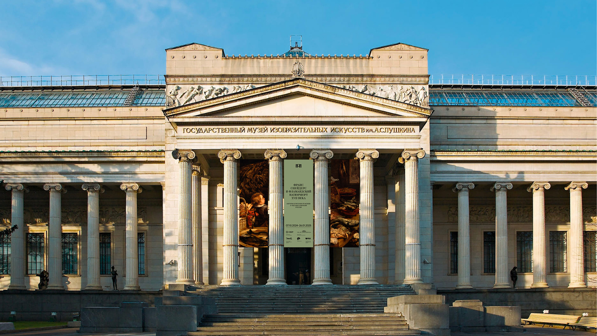
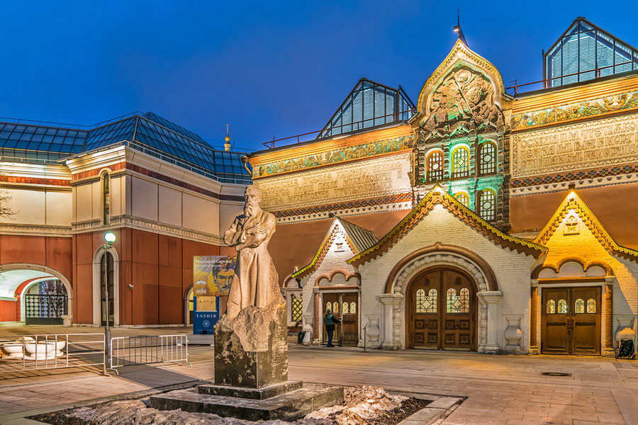
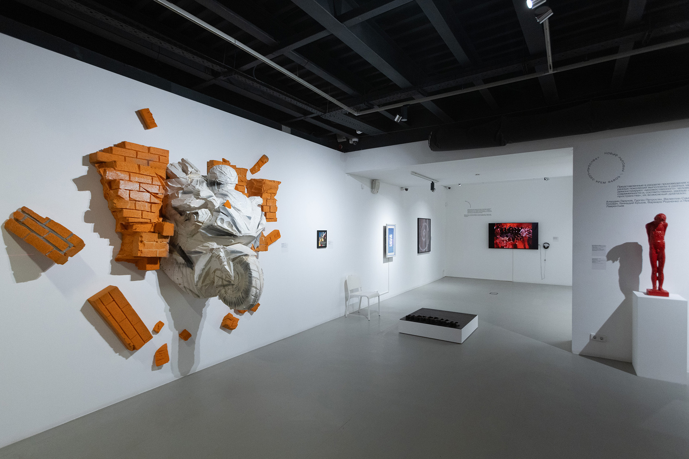
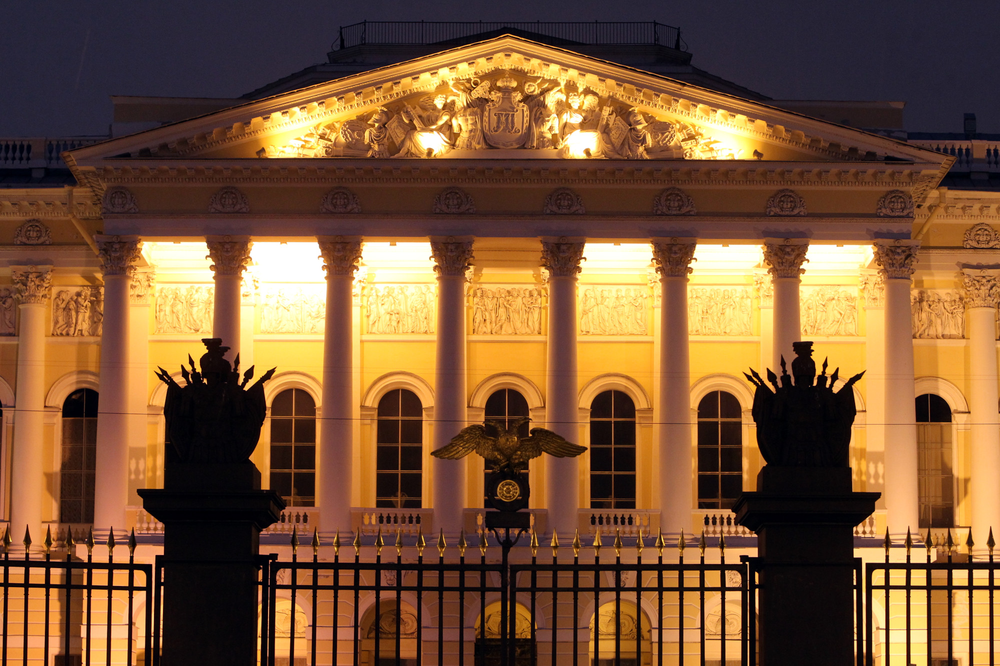
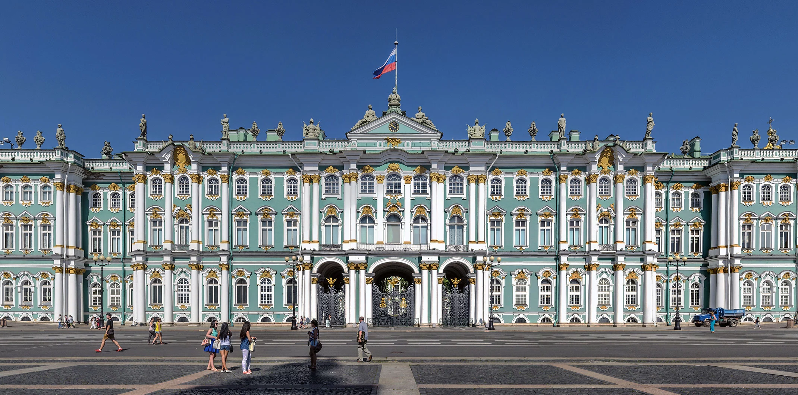
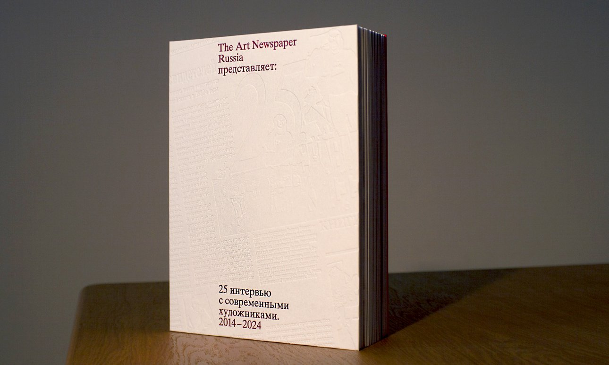
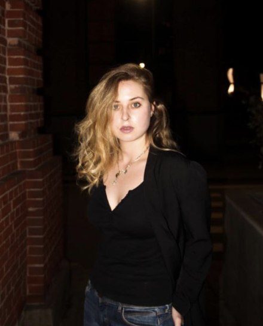

Researcher
Ekaterina Petukhova
Student, Digital Humanities and Digital Knowledge
University of Bologna
ekaterina.petukhova@studio.unibo.it
KNOWLEDGE REPRESENTATION & EXTRACTION · UNIVERSITY OF BOLOGNA
A Knowledge Engineering Study of Exhibition Policy Transformation
This project analyzes the structural shift in exhibition and coverage discourse across six Russian museums in Moscow and St. Petersburg — the Pushkin Museum, the Tretyakov Gallery, Garage, MAMM, the State Russian Museum and the State Hermitage Museum — plus one independent art publication, before and after 2022. Using semantic ontologies, knowledge graphs and TF-IDF keyword analysis, we quantify how these institutions repositioned their identity from "Global Cultural Hub" to "Archival/Provenance-focused Institution" — with one notable exception that turns the story East instead.
Supervised by Prof. Aldo Gangemi. We acknowledge the guidance and methodological frameworks provided in translating tacit curatorial knowledge into formal semantic representations.

CASE STUDY · ART OF MOSCOW
Pushkin State Museum of Fine Arts: the pivot in its purest form
Pushkin and Tretyakov used to be analyzed as a single combined corpus. Split apart, Pushkin turns out to be the institution that tracks the site's central thesis most cleanly: Western engagement contracts, National Russian Art grows, and one keyword vanishes outright.
Click a legend item to isolate a theme · hover or tap a bar for the year's breakdown · click a period below to compare eras
Before 2022, Western Art led Pushkin's programme at 50.7%, with Eastern Art (25.3%) ahead of National Russian Art (24.0%). After 2022, Western Art falls to 42.7% — still the largest single category, but National Russian Art overtakes Eastern Art to become a close second (38.7% vs. 18.7%). Of the four institutions studied outside the Hermitage, Pushkin is the one where Western Art never fully cedes the lead — the pivot here is a redistribution, not yet a reversal.
Hover a bar for its exact value · click a keyword or the share chart to see the numbers behind it
гравюры (engravings) was Pushkin's single highest-weighted keyword before 2022 (0.0342) — and it drops to exactly zero afterward, vanishing from the top terms entirely. In its place, the same institutional-history markers seen across the rest of the site rise: xix and веков (centuries) both climb, and проект (project) very nearly doubles. The specific medium falls away; the historical frame around it grows.
Two exhibitions from each period, in the museum's own words, illustrate the pivot the numbers describe.
All ten keywords are Russian-language terms from the source corpus, translated to English and marked RU. Weights are the mean TF-IDF score per document.

CASE STUDY · ART OF MOSCOW
The State Tretyakov Gallery breaks the pattern — and turns east, not home
Every other institution in this study grows more national after 2022. Tretyakov, separated from the combined Pushkin+Tretyakov corpus for the first time, does the opposite. Its data also only runs from 2017 onward, so treat the year-by-year shape with that gap in mind.
Click a legend item to isolate a theme · hover or tap a bar for the year's breakdown · click a period below to compare eras
Before 2022, Tretyakov was already overwhelmingly national (69.2%) — unsurprising for a gallery built on the Russian canon. What changes after 2022 isn't a further tilt toward “national”: National Russian Art's share actually falls to 58.5%, while Western Art holds almost steady (25.0% → 24.4%) and Eastern Art nearly triples (5.8% → 17.1%). If there's a “pivot to the East” anywhere in this whole study, this is the one place it's actually happening in the numbers, not just the discourse.
Hover a bar for its exact value · click a keyword or the share chart to see the numbers behind it
The site's original combined analysis reported a national-component rise of 22.3% → 35.9% for “Pushkin and Tretyakov” together. That number was real, but it averaged two institutions moving in opposite directions: Pushkin's rise pulled the average up, Tretyakov's fall pulled it down, and the blend looked like a single consistent trend. Separated, Tretyakov's own keyword shift is subtler than a vocabulary swap — искусстве (art, prepositional case) loses the most weight, while мастера (masters) and годов (years) gain the most — a shift toward craft and chronology rather than a single dramatic word disappearing.
Tretyakov's own titles make the eastward turn concrete — before 2022, international collaboration; after, exhibitions that name the East directly.
All ten keywords are Russian-language terms from the source corpus, translated to English and marked RU. Weights are the mean TF-IDF score per document.

CASE STUDY · CONTEMPORARY ART
Reading the national pivot through the Garage Museum of Contemporary Art
Garage has no historical exhibition calendar to fall back on: unlike the Tretyakov Gallery and Pushkin Museum, it does not stage a steady programme of new exhibitions, which would make an exhibition-by-exhibition analysis unreliable. Instead, we analyzed the museum's own news publications — 368 in total — as the clearest record of what the institution chooses to say about itself, year by year. Read the split with care: 339 of those publications are from before 2022, and only 29 are from after — by far the most lopsided before/after split of any institution in this study, so percentages on this page rest on a much smaller post-2022 sample than elsewhere on the site.
Click a legend swatch to isolate a period · hover or click a bar for its exact share
The statistical shift between the periods before and after 2022 reveals a profound transformation in the museum's institutional strategy — read against a post-2022 sample of just 29 publications:
The data quantifies Garage's transition from a globally integrated cultural institution to a localized entity, characterized by a near-exclusive focus on national artistic production — a conclusion we're confident in for the national/Western split (built on hundreds of publications on both sides for the direction, if not the exact after-2022 percentage), and one to treat as suggestive rather than conclusive for the smaller Eastern-Art figure specifically.
The chart above compares Garage's whole publication corpus before and after 2022 — but the after-2022 corpus is already 96.6% National Russian Art, so a full-corpus keyword comparison would mostly just re-measure that category shift, not tell us anything new. Instead, we held the category fixed: every publication below was already classified as National Russian Art, both before and after 2022, so the question becomes narrower and more defensible — not “how did Garage's coverage change”, but “did the character of its national discourse change, independent of the category shift itself?”
TF-IDF on National Russian Art publications only — 269 before 2022, 28 after. Hover a bar for its exact weight · click a keyword to compare it across periods.
Restricting the comparison to publications already tagged National Russian Art removes the category shift as a confound — both sides describe the same kind of art, just at different points in time. Even so, the register moves: книга (book) rises more than five-fold (0.0065 → 0.0346), and искусстве (art, prepositional case) more than doubles, while проекта (project) and россии (Russia, as an explicit noun) both ease down. The clearest single pair falls just outside this chart's top ten: триеннале (triennial) and конкурса (open call) — words describing an open, participatory festival format — fade from a combined weight of 0.0378 before 2022 to just 0.0081 after, while ссср (USSR) and институций (institutions) — words invoking the country's own institutional history — more than triple, from 0.0170 to 0.0561 combined. On a sample of 28 post-2022 publications this is suggestive rather than conclusive, but it points to the same pattern seen everywhere else on this site: even holding the topic constant, Garage's own language leans further into institutional self-reference and further away from open, festival-style participation.
All ten terms are Russian-language and marked RU. Weights are the mean TF-IDF score per document, restricted to publications already classified as National Russian Art in both periods.
Three publications from each period, translated to English, illustrate the pivot in the museum's own words.
The data indicates a fundamental institutional pivot: the Garage Museum has transitioned from a globally integrated platform for international cultural exchange into a localized entity focused almost exclusively on the consolidation of national art. The complete cessation of Western-oriented programming, paired with the new strategic emphasis on forming a domestic collection, underscores a survival strategy centered on internal cultural preservation. Ultimately, the museum's current activities reflect a shift from being a bridge to the global art world to becoming a primary site for the institutionalization of the Russian contemporary scene.

CASE STUDY · ART OF MOSCOW
Multimedia Art Museum, Moscow — already near the ceiling before 2022 even began
MAMM is the largest corpus in this study — 661 exhibitions, more than any of the other three institutions. But the split is uneven: 498 records before 2022 against just 163 after, and post-2022 activity thins out sharply in the data (2023 alone has only 5 listed exhibitions). Read the scale of the shift with that caveat in mind — what MAMM adds isn't a bigger swing, it's a look at where the swing ends up.
Click a legend item to isolate a theme · hover or tap a bar for the year's breakdown · click a period below to compare eras
Unlike the other three institutions, MAMM doesn't start from a balanced or even Western-leaning position. Even before 2022, National Russian Art already accounted for 89.6% of its programme, with Western Art at a thin 8.6% and Eastern Art almost absent (1.8%). After 2022, Western Art nearly vanishes (1.2%) and National Russian Art closes in on total saturation (98.8%). There's no dramatic reversal here because there was barely anywhere left to move — MAMM shows what the other institutions' curves are converging toward.
Hover a bar for its exact value · click a keyword or the share chart to see the numbers behind it
Line up the national-share jumps across every institution studied and MAMM stands out for having one of the smallest point increases, not the largest: Hermitage leads at +17.9 pp (21.6% → 39.5%), Garage follows at +17.2 pp (79.4% → 96.6%), Pushkin at +14.7 pp (24.0% → 38.7%), the Russian Museum at +13.8 pp (54.5% → 68.3%) — and MAMM just +9.2 pp (89.6% → 98.8%). That's not a weaker pivot; it's a ceiling effect. MAMM entered 2022 already close to where the others are heading, which makes it less another data point on the same slope and more a preview of where that slope runs out. (Tretyakov, examined on its own page, is the one institution that moves the other way entirely — see the Results page for the full comparison.)
Two exhibitions from each period, from MAMM's own listings, show what little room was left for the pivot to move into.
MAMM's own site is bilingual and its exhibition text was already scraped in English, so unlike the other case studies, no translation or RU tagging is needed here — every term below is native to the source text.

CASE STUDY · ART OF PETERSBURG
The State Russian Museum tests the pivot outside Moscow
Everything so far — Pushkin, Tretyakov, Garage — is a Moscow story. The State Russian Museum, in St. Petersburg, gives us an independent test: a different city, a different institution, working from its own exhibition archive. If the same national pivot shows up here too, it isn't a Moscow-specific artifact — it's a pattern.
Click a legend item to isolate a theme · hover or tap a bar for the year's breakdown · click a period below to compare eras
Before 2022, National Russian Art already led the Russian Museum's programme (54.5%), with Western Art a substantial second (35.5%) and Eastern Art a minor presence (10.0%). After 2022, Western Art's share nearly halves to 21.0%, Eastern Art barely moves (10.7%), and National Russian Art absorbs almost all of the difference, climbing to 68.3%. The shape of the shift is the same one seen in Moscow: Western engagement contracts, and national programming fills the space it leaves behind.
Hover a bar for its exact value · click a keyword or the share chart to see the numbers behind it
The Russian Museum's national-share jump — 54.5% → 68.3%, up 13.8 percentage points — sits alongside Garage (79.4% → 96.6%), Pushkin (24.0% → 38.7%) and the Hermitage (21.6% → 39.5%): four institutions, two cities, several different eras of art, all moving the same direction. Tretyakov, examined separately, is the one exception — its national share falls rather than rises, which is precisely why averaging it together with Pushkin in the original combined analysis was misleading. See the Results page for the full six-way comparison.
Exhibition titles and descriptions were lemmatized — reduced to their dictionary form — and scanned for mentions of Russian cities, to see whether the museum's own programming became more centralized or more geographically distributed after 2022. The number of distinct cities mentioned doubled, from 8 before 2022 to 16 after.
Click a legend item to isolate a period · hover or click a bar for its exact mention count
Before 2022, the list was short and lopsided: Vladimir alone (15 mentions) outweighed every other city, with Saint Petersburg, Moscow and Kazan a distant second tier, and four cities appearing only once. After 2022, Saint Petersburg becomes the clear leader (13 mentions), but the more telling change is in the tail — eight cities appear that weren't mentioned at all before 2022: Zvenigorod, Ryazan, Tula, Novosibirsk, Samara, Omsk, Ufa and Rostov. The museum's post-2022 focus on “national” art isn't just a turn toward Russia as an abstraction; it's a turn toward a wider, more distributed set of Russian regions.
Two exhibitions from each period, from the museum's own archive, put faces and titles to the numbers above.
All ten keywords are Russian-language terms from the source corpus, translated to English and marked RU. Weights are the mean TF-IDF score per document, not a raw sum — this keeps the two periods comparable even though the post-2022 sub-corpus (271 records) is smaller than the pre-2022 one (380 records).

CASE STUDY · ART OF PETERSBURG
The State Hermitage Museum: the one institution that doesn't fully converge
Garage, MAMM and the Russian Museum all end up dominated by National Russian Art after 2022. The Hermitage is different: it holds one of the world's great encyclopedic collections, with a genuinely strong Eastern department of its own, and that changes the shape of the story. 453 exhibitions were analyzed (306 before 2022, 147 after); 15 records that were only site boilerplate, with no real exhibition text, were excluded from the national-share and keyword calculations below, leaving 291 usable pre-2022 records.
Click a legend item to isolate a theme · hover or tap a bar for the year's breakdown · click a period below to compare eras
Before 2022, Western Art led (45.8%), with Eastern Art a strong second (33.7%) and National Russian Art the smallest share by far (20.6%). After 2022, National Russian Art nearly doubles to 39.5% and does become the single largest category — but Western Art is still close behind at 32.7%, and Eastern Art remains a substantial 27.9%. Nothing here collapses to near-zero the way Western Art did at Garage. The Hermitage's encyclopedic identity — genuine depth in Eastern and Western collections alike — means the pivot registers as a change in emphasis, not a change in kind.
Hover a bar for its exact value · click a keyword or the share chart to see the numbers behind it
By percentage points, the Hermitage's national-share rise — 21.6% → 39.5%, up 17.9 pp — is the largest of any institution in this study, edging out even Garage (+17.2 pp), ahead of the Russian Museum (+13.8 pp) and MAMM (+9.2 pp). But it lands at the lowest post-2022 ceiling of any of them: 39.5% is well short of Garage's 96.6%, MAMM's 98.8%, or the Russian Museum's 68.3%. The keyword shift tells a matching story — it isn't a change of vocabulary so much as a change of emphasis. Generic terms like “art” and “books” lose weight, while self-referential, institutional terms — “palace”, “winter” (as in the Winter Palace), “Russia” — gain it. The same institutional self-reference seen at Tretyakov and Pushkin, just without the wholesale category collapse seen at Garage or MAMM.
Unlike every other page in this study, this isn't a before/after contrast — it's proof of continuity. All four exhibitions below opened after 2022, straight from the Hermitage's own listings.
All ten keywords are Russian-language terms from the source corpus, translated to English and marked RU. Weights are the mean TF-IDF score per document, the same normalized method used for the Russian Museum.

INDEPENDENT MEDIA
The Art Newspaper Russia: an independent read on 2,621 exhibitions across the whole scene
Every other page in this study analyzes one museum's own account of itself. theartnewspaper.ru is different: an independent art publication reporting on exhibitions across dozens of institutions at once. It's the largest corpus in the whole project — 2,621 exhibition mentions, 2014–2026 — and a useful check on whether the pivot is an institutional talking point or a scene-wide fact.
Click a legend item to isolate a theme · hover or tap a bar for the year's breakdown · click a period below to compare eras
Western Art still leads independent press coverage even after 2022 (49.6%), down from a dominant 57.5% before. National Russian Art rises only modestly, from 30.9% to 34.1% — a fraction of the swing seen at any single museum in this study. That's expected: this corpus aggregates coverage of dozens of institutions, most of which never adopted the pivot as sharply as Garage or MAMM did. The scene-wide signal is real and points the same direction, but it's diluted by everything that didn't change.
Hover a bar for its exact value · click a keyword or the share chart to see the numbers behind it
современного (contemporary) falls further than any other term (0.0209 → 0.0136) — independent coverage of contemporary art specifically contracts, consistent with what MAMM and Garage show from the inside. центре (center, as in art center or venue) rises the most, suggesting coverage leans more on naming the institution or venue itself. It's the same institutional-self-reference pattern seen everywhere else in this study, just visible from outside the museums rather than from within them.
Two headlines from each period, straight from theartnewspaper.ru, show the same shift a reader would have noticed just by following the coverage.
All ten keywords are Russian-language terms from the source corpus, translated to English and marked RU. Weights are the mean TF-IDF score per document.
Six independent institutions, one converging story — and one exception
Every other page in this study analyzes one institution (or one media outlet) in isolation, using its own dataset and its own classifier run. This page puts all seven side by side. The point of doing that separately, rather than pooling everything into one corpus from the start, is exactly what the old combined Pushkin+Tretyakov page got wrong: an average can look like a trend even when it's hiding two institutions moving in opposite directions.
Click a legend item to isolate a period · hover or click a bar for its exact value
| Institution | Before 2022 | After 2022 | Change |
|---|
Five of the six museums studied here — Pushkin, Garage, MAMM, the Russian Museum and the Hermitage — show National Russian Art's share rising after 2022, using five independent classifier runs across two cities, two eras of art (historical collections and contemporary art), and datasets ranging from 175 to 661 records. Garage and MAMM show what the pivot looks like when it runs all the way to a ceiling (96.6% and 98.8%). The Hermitage shows the same direction with the least room to move, thanks to a genuinely deep Eastern collection of its own. Independent press coverage (The Art Newspaper Russia) confirms the same direction at scene level — +3.2 percentage points across 2,621 exhibition mentions — muted exactly as you'd expect from an aggregate that also covers everyone who didn't pivot.
The Tretyakov Gallery's national share falls, 69.2% → 58.5%, while its Eastern Art share nearly triples (5.8% → 17.1%). This is the one place in the whole study where a literal “pivot to the East” shows up in the numbers rather than just the discourse. It's also the reason the original combined Pushkin+Tretyakov page reported 22.3% → 35.9%: that number averaged Pushkin's real rise against Tretyakov's real fall, and the blend obscured both stories. Splitting the corpus didn't just fix a number — it surfaced a genuine counter-example, which makes the pattern found everywhere else more credible, not less.
Underneath the category numbers, almost every TF-IDF keyword analysis in this study finds the same kind of shift, independent of which words actually move:
гравюры (engravings) — the top pre-2022 term — disappears entirely; xix and веков (centuries) rise.искусства (art) and книги (books) lose weight; дворца and зимнего (Winter Palace) gain it.искусстве (art) falls; мастера (masters) and годов (years) rise — craft and chronology over general claims.современного (contemporary) falls furthest of any term; центре (center/venue) rises most.The specific words differ by institution, but the direction doesn't: generic or medium-specific vocabulary loses weight, and terms tied to the institution's own history, architecture or chronology gain it. That's the same finding as the original “unique → century” result that started this project, replicated independently across five more datasets with five different vocabularies.
Six independently collected, independently classified datasets converge on the same finding: after 2022, Russian museums' own accounts of themselves shift toward national framing and institutional self-reference, at the expense of Western engagement and generic art vocabulary. The one exception (Tretyakov's turn East) and the one dilution (independent press coverage) don't undermine that finding — they sharpen it, by showing exactly where the pattern is strongest, where it saturates, and where it doesn't hold at all.
The formal model behind six museums, one media outlet, and the institutional pivot
Every other page on this site reports one source's own results. This page describes the model underneath all of them — the classes and relationships that every exhibition record, whether scraped from a museum's own archive or from independent press coverage, is reduced to before it can be compared across six institutions and one media outlet at once.
Classes connected by object properties (solid arrows) and is-a links (dashed). Drag a node to explore, click for details.
Ten classes, grouped the same way as the graph above: the central event, its sources, its context, and the discourse layer where the keyword analysis lives.
⚷ marks a functional property — one where a given subject can have at most one value (an exhibition has exactly one source, one category, one period).
| Property | Domain | Range |
|---|
Twelve properties attaching literal values — strings, years, counts, percentages — to the classes above.
| Property | Domain | Range |
|---|
A handful of real instances asserted in the model, shown as subject · property · value — the same two exhibitions used as examples on the Pushkin and Tretyakov pages.
| Subject | Property | Value |
|---|
The full OWL/RDFS ontology in Turtle syntax — all 10 classes, 8 object properties, 12 data properties and 22 individuals shown on this page, hand-authored to match every verified figure elsewhere on the site.
The institutional pivot traced across this whole site is, underneath, a shift in two edges out of every Exhibition node: its hasOrigin edge moves from International_Loan toward Internal_Reserve, and its hasCategory edge moves from Western_Art toward National_Russian_Art. Six independent instances of that same shift, plus one exception (Tretyakov's edges move toward Eastern_Art instead) and one diluted echo in the independent press, are what the rest of this site measures one institution at a time. This page is the schema all of it was measured against.
How we extract and represent tacit institutional knowledge
Students of the Digital Humanities and Digital Knowledge programme at the University of Bologna
Researcher
Student, Digital Humanities and Digital Knowledge
University of Bologna
ekaterina.petukhova@studio.unibo.it
Researcher
Student, Digital Humanities and Digital Knowledge
University of Bologna
maria.grigoryeva@studio.unibo.itThis project was developed within the Digital Humanities and Digital Knowledge programme at the University of Bologna. It investigates changes in Russian museum discourse and exhibition policy through web scraping, text processing, zero-shot classification, keyword analysis, ontology design, and knowledge graph modelling.
The page you're looking for doesn't exist.